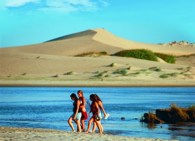
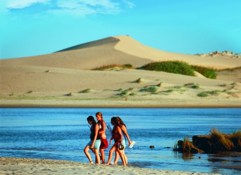

Aguas Dulces, un clásico de la costa uruguaya sobre el Océano Atlántico. Se trata de un pintoresco balneario que atrae tanto por su belleza natural, como por los servicios con los que cuenta. En definitiva, es otro destino que reúne todas las condiciones para pasar unas vacaciones en familia o con amigos.
Informacion
Que no me puedo olvidar
- Lentes de sol
- Protector
- Short de baño
- Championes deportivos
- Ganas de disfrutar
Que hacer en el AD
Playita
Su playa es extensa, sin cabos ni puntas rocosas, y está atravesada por cañadas y lagunetas. Una de las actividades más populares son las largas caminatas por la costa, en la cual es posible hallar elementos de los tantos naufragios ocurridos en la zona.

Laguna Briozzo
Otro de los senderos autoguiados que puedes hacer desde Aguas Dulces es hacia la Laguna de Briozzo. Esta bella caminata transcurre por el bosque y desemboca en un espejo de agua dulce, de color rojiza, en donde podrás darte un baño. Los atardeceres allí son espectaculares, por lo que te sugerimos que esperes a que el sol comience a esconderse para disfrutar de este momento.

Naufragio
Las costas de Rocha son famosas por sus naufragios, la mayoría de los cuales se ubican en las costas de Cabo Polonio, Barra de Valizas y Aguas Dulces. Como no podría ser de otra manera, en torno a ellos hay varias leyendas creadas a partir de sus tragedias. Uno de ellos es el famoso naufragio Arinos, que el 9 de octubre de 1875, producto de una fuerte tormenta, encalló en la playa de Aguas Dulces.
El encanto de sus balnearios vecinos

 


.jpg "Foto de perfil del Maestro de Aguas Dulces")
.jpeg "Foto de una pescadora local, que mira fijamente la camara")
.jpg "Foto de Elida una vieja bañista de Aguas Dulces")